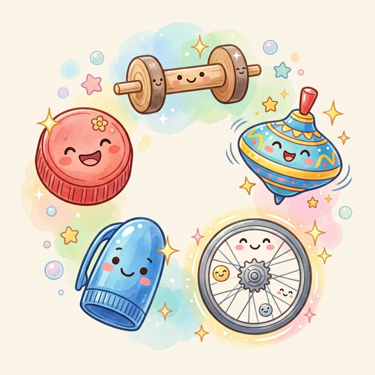
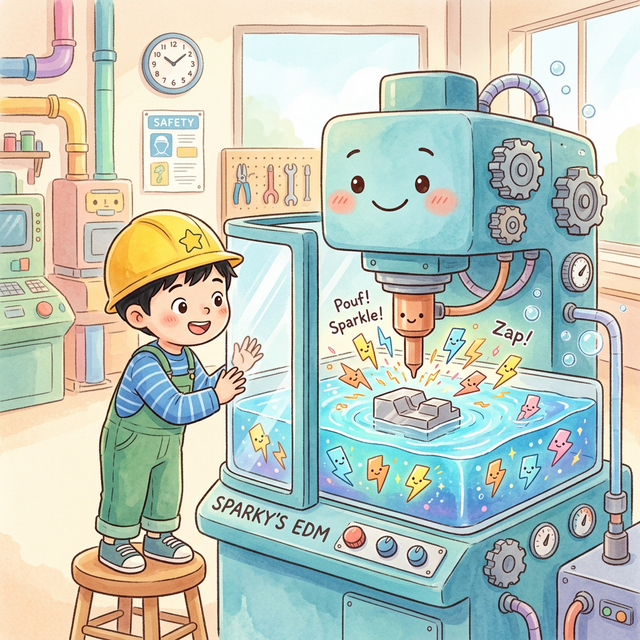

こうさくきかいの
せかいへ
ようこそ！

まなぶくんは、ものづくりが だいすきな おとこのこ。 きょうは おとうさんと いっしょに こうじょうけんがくに いくんだって！ 「どんな きかいが あるのかな？」 まなぶくんは ワクワクしています。

おおきな こうじょうに とうちゃく！ 「わあ、すごく おおきいね！」 あんないの おねえさんが にっこり わらって むかえてくれました。 「さあ、きかいたちに あいにいこう！」

こうさくきかいって なに？
「こうさくきかいは ね、 きかいを つくるための きかいなの。 かたい きんぞくを けずったり、 あなを あけたりして、 いろんな かたちを つくるんだよ」

⭐ ターニングセンタ
「これが ターニングセンタだよ！ まるい ものを つくるのが とくいなんだ。 ざいりょうを ぐるぐる まわしながら、 はもので けずって かたちを つくるの。 こまみたいに まわるんだよ！」

どうやって けずるの？
ざいりょうが ぐるぐる まわります。 そこに はものを あてると… しゅるしゅるしゅる〜！ きんぞくの けずりかすが リボンみたいに くるくる でてくるよ！

こんな ものを つくるよ！
くるまの じく、ペンの キャップ、 こまや じてんしゃの ぶひん… まるい ものは みんな ターニングセンタの とくいわざ！ 「すごーい！」と まなぶくん。

🔧 マシニングセンタ
「つぎは マシニングセンタ！ あなを あけたり、たいらに けずったり、 みぞを ほったり…なんでも できる ばんのうせんしゅ なんだよ！ どうぐを じどうで かえられるんだ！」

✨ けんさくばん
「この きかいは けんさくばん。 つるつる ピカピカに しあげる めいじんだよ。 おおきな といしが まわって、 ひょうめんを なめらかに するんだ。 かがみみたいに ピカピカ！」

⚡ ほうでんかこうき
「これは ほうでんかこうき。 でんきの ちいさな ひばなで かたい きんぞくも かこうできるよ。 パチパチパチッ！ まるで まほうみたいだね！」

🌟 ごじく かこうき
「さいごは ごじく かこうき！ いつつの ほうこうに うごけるから、 どんな ふくざつな かたちも つくれるよ。 ひこうきの はねだって つくれちゃう！ きかいの おうさまだね！」

みんなの まわりにも！
スマートフォン、くるま、ひこうき、 じてんしゃ、とけい… みんなの まわりの ものは、 こうさくきかいが つくった ぶひんで できて いるんだよ！

こうじょうけんがくを おえた まなぶくん。 ゆうやけを みあげて おもいました。 「ぼくも おおきくなったら、 すごい ものを つくる エンジニアに なりたいな！」

おしまい
よんでくれて ありがとう！ 🔧 ミニじてん 🔧 ターニングセンタ＝まるい ものを つくる きかい マシニングセンタ＝いろんな かこうが できる きかい けんさくばん＝ピカピカに みがく きかい ほうでんかこうき＝でんきで けずる きかい ごじくかこうき＝なんでも つくれる すごい きかい